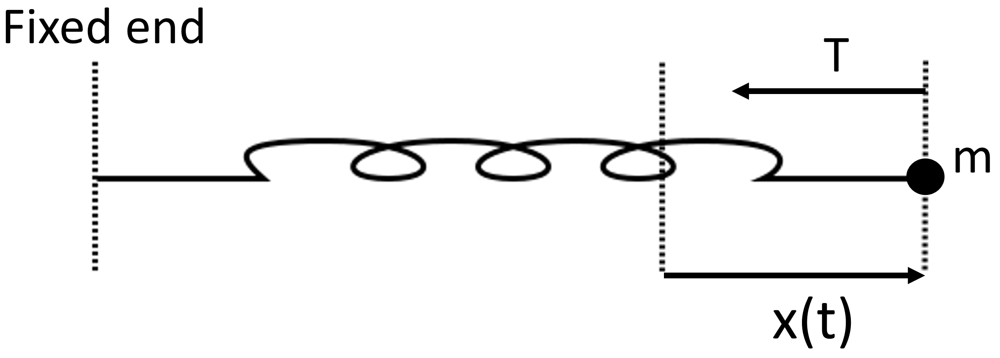

Lecture 10. From the second law of motion to second order ODEs#
While he might not have describe dhimself as such, Isaac Newton was a fantastic mathematical modeller. One of his crowning achievements was describing the laws of motion, in particular the second law, which says that the force on an object is equal to its mass times its acceleration, \(F=m a\). This turns out to be an extremely accurate mathematical model. It breaks down if your objects are extremely small (e.g. the size of a small molecule or less) or extremely massive (e.g. the mass of a star or bigger) but is remarkably good away from those extremes.
Now, the force may be a function of its location, \(x\), and/or its speed, \(s\). For example, the friction force of air on a falling object increased as its speed, \(s\). As another example, the force of Earth’s gravity decreases as an object’s location, \(x\), moves away from Earth. So we can write \(F\) as a function of \(x\) and \(s\), i.e. \(F=F(x, s)\).
Furthermore, speed is just the rate of change in an object’s location over time, so \(s=\dot{x}\). Also, acceleration is the rate of change in speed over time, so \(a=\dot{s}=\ddot{x}\) (two dots over a symbol mean ‘differentiate it twice with respect to time’). Putting this all together, we can write the second law of motion as
This is a second order differential equation. We will be studying various examples of these, how to solve them, and how they are used to model specific scenarios, during the next few lectures.
Figure 15: A spring in a gravity-free environment, with a mass on one end, fixed at the other end, with extension given by \(x(t)\).
Example 15
Consider a mass \(m\) on one end of a spring in a gravity-free environment (e.g. space), assuming that there is no friction. The other end is fixed. If we stretch the spring a distance \(L\) and release it at time \(t=0\), it has a single force acting on it, due to the tension of the spring, which we will call \(T\). Hooke’s law says that \(T=k x\) where \(k\) is the stiffness of the spring and \(x\) is the extension of the spring. We can thus use the second law of motion (Equation 106) to show that
(The reason for the minus sign is that the force is in the opposite direction to the extension, see Figure 15. The constant \(\omega\) will turn out to be the angular frequency of the oscillations, as we will see in the solution.) Find an expression for the extension, \(x(t)\), as a function of time. Interpret the result physically, in terms of the movement of the mass, \(m\).
Solution.
The ODE can be written \(\ddot{x}+\omega^{2} x=0\), where \(\omega\) is a constant. To solve such an ODE, we use something called an ansatz. That’s a German word meaning, essentially, ‘an educated guess that will be verified later’. The ansatz we use here is that \(x=A \cos (m t)\) for constants \(m\) and \(A \neq 0\). Then \(\dot{x}=-m A \sin (m t)\) and \(\ddot{x}=-m^{2} A \cos (m t)\). Placing these expressions into the ODE \(\ddot{x}=-\omega^{2} x\) gives
We can divide through by \(A \cos (m t)\) to give
Since \(\cos (\omega t)=\cos (-\omega t)\), we have
Finally, we need to apply the initial condition. Notice that the question said ‘we stretch the spring to a distance \(L\) and release it at time \(t=0\) ‘. This means that the extension at time \(t=0\) is \(L\), i.e. \(x(0)=L\). Hence, by Equation (108), \(L=x(0)=A \cos (0)=A\). Thus the solution is \(x(t)=L \cos (\omega t)\).
The physical interpretation is that the mass oscillates in perpetuity between \(x=-L\) and \(x=L\) with angular frequency \(\omega\). The angular frequency is related to the period, \(T\), of the oscillation via \(\omega=2 \pi / T\). You may recall the definition of period from Section 3 as the smallest \(T>0\) such that \(x(t)=x(t+T)\) for all \(t\).
10.1 Homogeneous second order ODEs with constant coefficients#
Example 15 used an ansatz. It is not always easy to find the right ansatz for any given problem. Thankfully, mathematicians already know the general solution for any ODE of the following type
where \(b\) and \(c\) are constants. Equation (109) is a homogeneous second order ODE with constant coefficients. There are three different cases, which we prove in the next three propositions.
Proposition 4
If \(b^{2}-4 c>0\) then the general solution to Equation (109) is
where \(A\) and \(B\) are constants and
Proof. We begin by looking for a solution of the type \(x(t)=A \exp (m t)\) for \(A \neq 0\), so that \(\dot{x}=m A \exp (m t)\) and \(\ddot{x}=m^{2} A \exp (m t)\). Plugging this into Equation (109) gives \(A m^{2} \exp (m t)+A m b \exp (m t)+A c \exp (m t)=0\). Cancelling \(A \exp (m t)\) throughout leads to
Equation (112) is called the auxiliary equation. The solutions are
Hence \(x(t)=x_{-}(t)=A \exp \left(m_{-} t\right)\) and \(x(t)=x_{+}=A \exp \left(m_{+} t\right)\) are both solutions to Equation (109). Therefore the general solution is any linear combination of these two solutions, i.e. \(x(t)=A \exp \left(m_{-} t\right)+B \exp \left(m_{+} t\right)\) (you will show in Exercise 21 that a linear combination of two solutions to Equation 109 is also a solution).
For example, to find the general solution of \(\ddot{x}+4 \dot{x}+3 x=0\), notice that \(b=4\) and \(c=3\) so \(b^{2}-4 c=4\) so we can apply Proposition 4. Then, by Equation (113), \(m_{+}=-1\) and \(m_{-}=-3\) so \(x(t)=A \exp (-t)+B \exp (-3 t)\) for constants \(A\) and \(B\).
Proposition 5
If \(b^{2}-4 c=0\) then the general solution to Equation (109) is
where \(A\) and \(B\) are constants.
Proof. In this case, we set \(x(t)=(A t+B) \exp (m t)\), where \(m=-b / 2\). Then \(\dot{x}=\) \((A t+B) m \exp (m t)+A \exp (m t)\) and \(\ddot{x}=(A t+B) m^{2} \exp (m t)+2 A m \exp (m t)\). Putting these into the LHS of Equation (109), and using \(b=-2 m\) and \(c=b^{2} / 4=m^{2}\), gives
Hence Equation (114) solves Equation (109) in the case \(b^{2}=4 c\).
For example, to find the general solution of \(\ddot{x}+4 \dot{x}+4 x=0\), notice that \(b=4\) and \(c=4\) so \(b^{2}-4 c=0\) so we can apply Proposition 5. Then \(x(t)=(A t+B) \exp (-2 t)\) for constants \(A\) and \(B\).
Proposition 6
If \(b^{2}-4 c<0\) then the general solution to Equation (109) is
where \(A\) and \(B\) are constants and \(q=\sqrt{4 c-b^{2}} / 2\).
Proof. This involves plugging Equation (116) into the LHS of Equation (109) and showing that all the terms vanish, which is just a direct (if slightly lengthy) calculation. I will leave it as a homework exercise (Exercise 22). Once you have learned about complex numbers, there is a slicker way of proving this (although it is not necessary to use complex numbers).
For example, to find the general solution of \(\ddot{x}+4 \dot{x}+8 x=0\), notice that \(b=4\) and \(c=8\) so \(b^{2}-4 c=-16<0\) so we can apply Proposition 6 . Here, \(q=2\), so \(x(t)=\) \(\exp (-2 t)[A \sin (2 t)+B \cos (2 t)]\) for constants \(A\) and \(B\).
Example 16
A car is driving along a straight road. The car then has a single force acting on it: a friction force proportional to the speed of the car acting in the opposite direction to the movement of the car. Explain why the force acting on the car is \(-\beta \dot{x}\) for some constant \(\beta>0\). Using the second law of motion, we have
Find an expression for \(x(t)\), the location of the car at time \(t\) in terms of \(\beta\) and \(m\).
Suppose the car weighs 1000 kg ( kg is kilogrammes), its initial speed is \(10 \mathrm{~ms}^{-1}\) ( m is metres and \(s\) is seconds), its initial location is \(x(0)=0\), and \(\beta=100 \mathrm{kgs}^{-1}\). How far does the car travel in the next 10 seconds?
Solution.
The friction force is acting in the opposite direction to the motion of the car, so is negative. It is also proportional to the speed of the car, which is \(\dot{x}\). Therefore the force acting on the car is \(-\beta \dot{x}\).
Now to solve Equation (117). If we let \(b=\beta / m\) then we can re-write Equation (117) as \(\ddot{x}+b \dot{x}=0\). This is in the form of Equation (109) with \(c=0\). Therefore we can apply Proposition 4, to give \(x(t)=A \exp \left(m_{+} t\right)+B \exp \left(m_{-} t\right)\), where
Thus \(m_{+}=0\) and \(m_{-}=-b\) so \(x(t)=A+B \exp (-b t)\) so
Plugging in the specific given values of \(m=1000 \mathrm{k}\) and \(\beta=100 \mathrm{kgs}^{-1}\) gives
We were told that the initial location is \(x(0)=0\). Therefore \(0=x(0)=A+B\) so \(A=-B\) so \(x(t)=A[1-\exp (-0.1 t)]\). To account for the initial speed of \(\dot{x}(0)=10 \mathrm{~ms}^{-1}\), we calculate
Then \(10=\dot{x}(0)=0 \cdot 1 A\) so \(A=100\). Hence
In the next 10 s , the car travels \(x(10)=10[1-\exp (-1)] \approx 6.32 m\).
Note
In the previous example, we introduced units of measurement. Speed was given in metres per second \(\left(\mathrm{ms}^{-1}\right)\) and mass in kilogrammes \((\mathrm{kg})\). These are just standard units of speed and mass, but then \(\beta\) was given in units of kilogrammes per second. Why? The reason is that the units on either side of Equation (117) have to match. The left-hand side is an acceleration, so has units of \(\mathrm{ms}^{-2}\). The right-hand side must also have the same units. Since \(m\) is in units of \(k g\) and \(\dot{x}\) in units of \(\mathrm{ms}^{-1}\), we need \(\beta\) to be in units of \(\mathrm{kgs}^{-1}\) for \(-\beta \dot{x} / \mathrm{m}\) to be in units of \(\mathrm{ms}^{-2}\).
Lecture 10 Homework exercises#
Exercise 20
Solve the following second order ODEs
(a) \(\ddot{x}+3 \dot{x}+2 x=0\)
(b) \(\ddot{x}-2 \dot{x}+x=0\), with \(x(0)=0\) and \(\dot{x}(0)=1\)
(c) \(\ddot{x}+2 \dot{x}+x=0\) (d) \(\ddot{x}+4 \dot{x}+4 x=0\), with \(x(0)=0\) and \(\dot{x}(0)=1\)
(e) \(\ddot{x}+2 \dot{x}+4 x=0\)
(f) \(\ddot{x}+\dot{x}+x=0\), with \(x(0)=1\) and \(\dot{x}(0)=1\)
(g) \(\ddot{x}+\dot{x}+2 x=0\), with \(x(0)=1\) and \(\dot{x}(0)=1\)
(h) \(2 \ddot{x}+4 \dot{x}+2 x=0\)
(i) \(2 \ddot{x}+2 \dot{x}+2 x=0\)
(j) \(3 \ddot{x}+12 \dot{x}+12 x=0\)
Exercise 21
[Hard-ish] Let \(x(t)=x_{-}(t)\) and \(x(t)=x_{+}(t)\) be solutions to \(\ddot{x}+b \dot{x}+c x=0\). Let \(\alpha\) and \(\beta\) be constants. Show that \(\alpha x_{-}(t)+\beta x_{+}(t)\) is also a solution to \(\ddot{x}+b \dot{x}+c x=0\).
Exercise 22
[Hard] Show that Equation (116) is a solution to Equation (109). [Hint: use Equation (116) to find \(\dot{x}\) and \(\ddot{x}\). Then plug these expressions into the left-hand side of Equation (109) and show that all the terms vanish.]